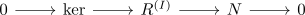
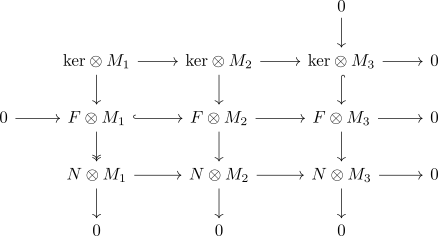
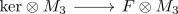
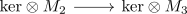
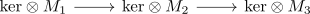
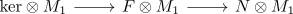
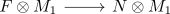

tensoring a sequence with flat right
Proposition
Let \(R\) be a ring and $\mathrm{RMod}$ the category RMod

be a short exact sequence
Proof
a)
b)
take any short exact sequence

e.g. by taking the free module $F = R^{(I)}$
Then this results in the diagram

which is exact at each object.
Then we have to show that
is injective
using minimal kernel and monomorphism, assume that $n_1 \in \mathrm{ker}(N \otimes M_1 \rightarrow N \otimes M_2)$ is a nontrivial element in the kernel. Then choose a preimage $f_1 \in F \otimes M_1$. Then using $\iota: F \otimes M_1 \rightarrow F \otimes M_2$ it follows that $\iota(f_1) \in \mathrm{ker}(F \otimes M_2 \rightarrow N \otimes M_2)$
By exactness of
there exists a lift $k_2$
By injectivity of

it follows that $k_3$ as $k_2 \mapsto 0$ under

Then by exactness of

we may take a lift $k_1 \in \mathrm{ker} \otimes M_1$.
By exactness it follows that
under

it follows that
for
which shows that $g(k_1) = f_1$.
As $f_1$ was defined as lift of

it follows that